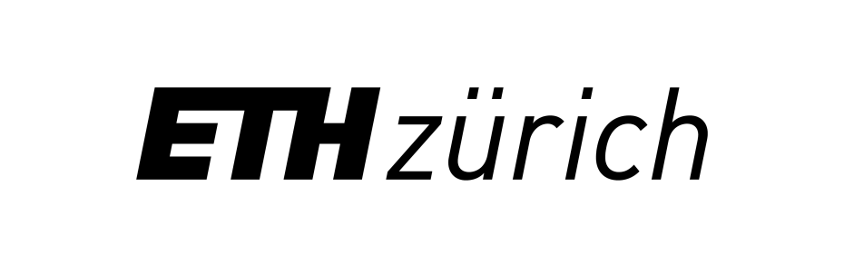
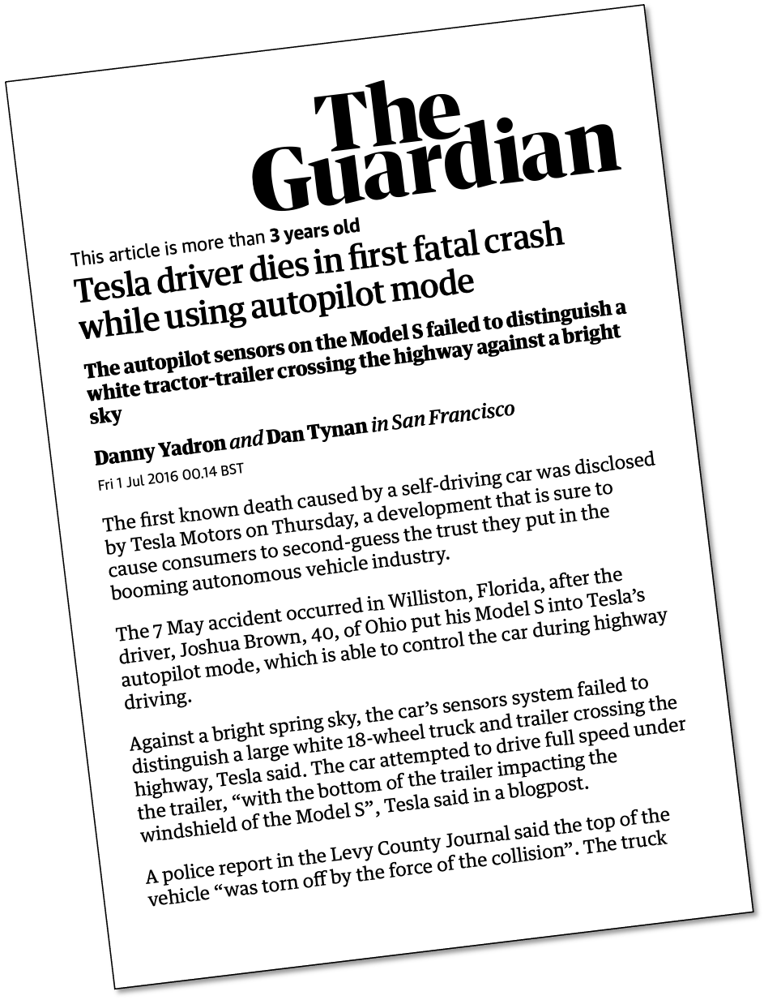
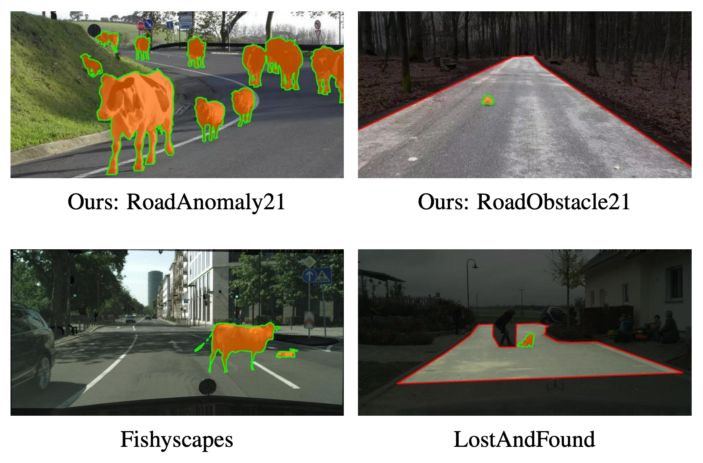
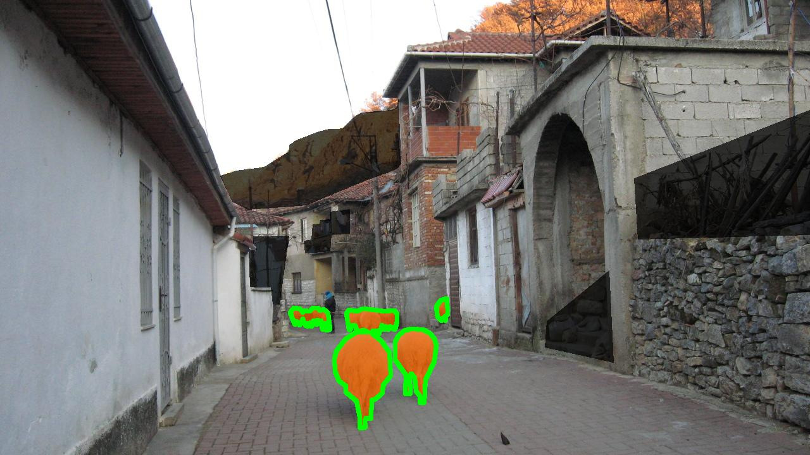
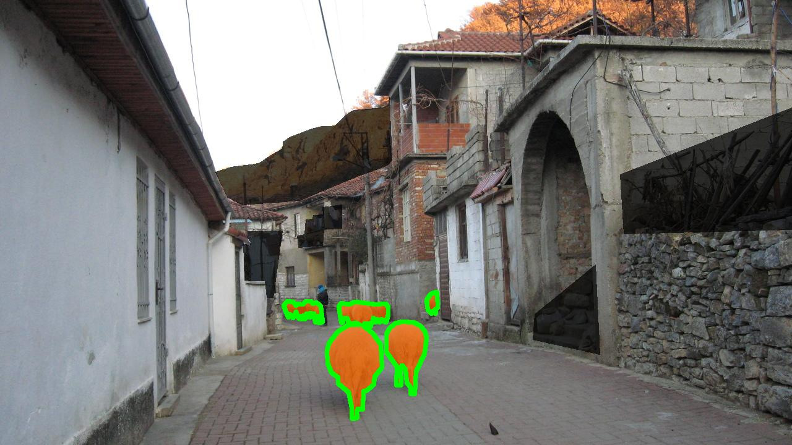

Segment Me If You Can
A Benchmark for Anomaly Segmentation
Meet the Team!
Robin Chan
Krzysztof Lis
Svenja Uhlemeyer
Hermann Blum

Sina Honari
Roland Siegwart
Pascal Fua
Mathieu Salzmann
Matthias Rottmann
Deep CNNs are unreliable outside of their training distribution
Perception Failures were at the Heart of Past Accidents

We benchmark semantic anomalies.
- We benchmark the identification of semantic anomalies that do not fit into any class definitions.
- 2 Tracks:
- Anomaly Track: detect and localize anomaly with respect to Cityscapes.
- Obstacle Track: detect and localize anything that is not drivable area on the road.
- based on real-world images
Public leaderboard and submission instructions at segmentmeifyoucan.com.
Data for Anomaly Segmentation is Scarce
Public Leaderboard
Datasets
RoadAnomaly21
 

Labeling Policy
Decision whether an object is anomalous or not is based on the 19 Cityscapes evaluation classes. If an object can be assigned to one of these classes, it is labeled as not anomaly (white), otherwise as anomaly (orange) or void (black).
RoadObstacle21
Labeling Policy
The road ahead is the region of interest, labeled as not obstacle (white). Every object placed on the road is labeled as obstacle (orange), everything besides the road is voided (black). We also void areas that could distract the model, such as wet spots on the road.
Anomaly Segmentation Performance Metrics
- Classic pixel-wise metrics:
- AUROC: Area under receiver operating characteristic curve (TPR vs. FPR)
- AUPRC: Area under precision recall curve (precision vs. recall)
- Recent component-wise metrics:
- sIoU: adjusted component-wise intersection over union wrt ground truth
- PPV: component-wise positive predictive value (or precision) wrt prediction
- TP: sIoU greater than a given threshold τ
- FN: sIoU smaller than a given threshold τ
- FP: PPV smaller than a given threshold τ
- F1(τ) := 2TP / (2TP + FP + FN) ∈ [0,1] averaged over τ=0.25,0.30,...0.75
green contour: IoU=68.18% vs. sIoU=87.01%
red contour: IoU=21.68% vs. sIoU=68.44%